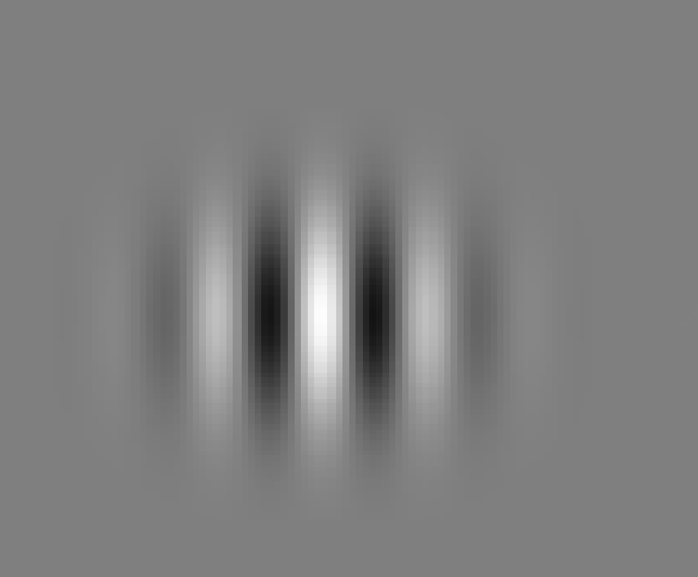

<!DOCTYPE html>
<html>
    <head>
  	<script src="https://unpkg.com/jspsych"></script>
  	<script src="https://unpkg.com/@jspsych/plugin-html-button-response"></script>
  	<script src="https://unpkg.com/@jspsych/plugin-audio-button-response"></script>	    
	<script src="https://unpkg.com/@jspsych/plugin-preload"></script>
	<script src="https://unpkg.com/@jspsych/plugin-browser-check@1.0.1"></script>
	<script src="https://unpkg.com/@jspsych/plugin-virtual-chinrest@2.0.1"></script>
  	<script src="https://unpkg.com/@jspsych/plugin-html-keyboard-response"></script>
	<script src="https://unpkg.com/@jspsych/plugin-html-button-response"></script>
  	<script src="https://unpkg.com/@jspsych/plugin-image-keyboard-response"></script>
    	<script src="https://unpkg.com/@jspsych/plugin-instructions"></script>
	    
      	<script src="jspsych-psychophysics.js"></script>
      	<script src="https://pixijs.download/release/pixi.js"></script>
	    
  	<link rel="stylesheet" href="https://unpkg.com/jspsych@7.1.2/css/jspsych.css"/>  
	<style>
      		html,body {
        	background-color: #808080;
        	color: white;
      		}
  	</style>
    </head>
    <body></body>
    <script>
	    
	    
	    // This experiment contains 2 tasks: an orientation reproduction task and an orientation discrimination task
	    // Initialize jspsych
	    const jsPsych = initJsPsych({
		    on_finish: function() {
			    jsPsych.data.displayData();
		    }
	    });
	    
	    // placeholder variables for subject, study, and sesion ids
	    let subject_id =  Math.round(Math.random()*100); //jsPsych.data.getURLVariable('PROLIFIC_PID');
	    let study_id = 'orientation_range';//jsPsych.data.getURLVariable('STUDY_ID');
	    let session_id = Math.round(Math.random())+1;// jsPsych.data.getURLVariable('SESSION_ID');
	    
	    // add above information to dataset
	    jsPsych.data.addProperties({
		    subject_id: subject_id,
		    study_id: study_id,session_id: session_id
	    });
	    
	    // currently not using pixijs, but would be a good idea to do so
	    const pixi_flag = jsPsych.data.getURLVariable('pixi_flag') === '1' ? true : false;
	    
	    // lenght of the line used in the response in pixels	    
	    const line_length = 100; 
	    
// Orientation reproduction task
	        
	    // practice stimuli
	    const training_stimuli = [
		    { stimulus: "Gab_45.png", orientation: 45},
		    { stimulus: "Gab_135.png", orientation: 135},
	    ];
	    
	    // test stimuli for condition 1
    	    const test_stimuli_range1 = [
		    { stimulus: "Gab_45.png", orientation: 45},
		    { stimulus: "Gab_135.png", orientation: 135},
	    ];
	    
	    // test stimuli for condition 2
	    const test_stimuli_range2 = [
		    { stimulus: "Gab_90.png", orientation: 90},
		    { stimulus: "Gab_0.png", orientation: 0},
	    ];
	    
	    // assign order of conditions based on subject and session ids
	    let test_stimuli_block1 = [];
	    let test_stimuli_block2 = [];
	    
	    if( (subject_id % 2==0 && session_id == 1) || (subject_id % 2!=0 && session_id == 2)) {
		    test_stimuli_block1 = test_stimuli_range1; 
		    test_stimuli_block2 = test_stimuli_range2; 
	    }
	    else if ( (subject_id % 2==0 && session_id == 2) || (subject_id % 2!=0 && session_id == 1)) {
		    test_stimuli_block1 = test_stimuli_range2; 
		    test_stimuli_block2 = test_stimuli_range1; 
	    };    
	    
	    // check what browser participants are using; specify minimum screen size requirements; do not allow mobile devices
	    const browser_check = {
		    type: jsPsychBrowserCheck,
		    minimum_width: 1500,
		    minimum_height: 750,
		    inclusion_function: (data) => {
			    return data.mobile === false
		    },
		    exclusion_message: (data) => {
			    if(data.mobile){
				    return '<p>You must use a desktop/laptop computer to participate in this experiment.</p>';
			    } 
		    },
		    on_finish: function (data) {
			    data.frame_duration = (1 / data.vsync_rate) * 1000;
			    let frame_duration = (1 / data.vsync_rate) * 1000;
		    }
	    };
	    
	    // measure screen resolution and participants' distance from the screen; 
	    // resize stimuli accordingly in degrees of visual angle. current setting - 50 pixels are strethced to 1 dva
	    const virtual_chinrest = {
		    type: jsPsychVirtualChinrest,
		    blindspot_reps: 5,
		    resize_units: "deg",
		    pixels_per_unit: 50
	    };
	    
	    // welcome to experiment instructions
	    const welcome_instructions = {
		    type: jsPsychInstructions,
		    pages: [
			    '<p>Welcome to the experiment. You have volunteered to take part in a research study investigating individual differences in orienation perception.<br>'+
			    'This study consists of 2 sessions. In each session, you will complete 2 different tasks. You have to complete the two sessions within 1 week.<br>'+
			    'This means that by agreeing to take part in this experiment, you will be committing to 2 sessions.<br>'+
			    'The experimenter will invite you to complete the second session. Each session should take you around 45 minutes to complete.</p>'
		    ],
		    show_clickable_nav: true,
		    allow_backward: false
	    };
	    
	    // orientation reproduction instructions: practice 
	    const reproduction_practice_instructions = {
		    type: jsPsychInstructions,
		    pages: [
			    // stimulus instructions
			    '<p> You will now perform an orientation matching task.<br>'+
			    'Each trial will begin with the presentation of a fixation cross.<br><br>'+
			    'Then you will see a black and white grating like the one below.<br>'+
			    '</img></p>',
			    // response instructions
			    '<p>After the grating disappears, you will be presented with a black line.<br>'+
			    'Your task will be to rotate the line so that it is oriented the same way as the grating.<br>'+
			    'To rotate the line, you have to have move your mouse to the right and to the left.<br><br>'+
			    '<video width="500" controls> <source src="response_instruction_video.mp4" type="video/mp4"></video></p>',
			    // feedback instructions
			    '<p>Finally, you will receive feedback which will indicate the accuracy of your response<br>'+
			    'The white line shows the true orientation of the grating. The coloured line shows your reponse.<br>'+
			    'The further away the coloured line is from the white line, the bigger the difference between your response and the true orientation of the grating.<br>'+
			    'If the coloured line is green, that means your response was close to the true orientation of the grating.<br>'+
			    '</img><br>'+
			    'If the coloured line is red, that means your response was not close to the true orientation of the grating.'+
			    '</img></p>',
			    '<p>You will first complete a practice block. Click Next to start the task. </p>'
			    	    
		    ],
		    show_clickable_nav: true,
		    allow_backward: true
	    };
	    
	    // orientation reproduction instructions: test block 1
	    const reproduction_test_instructions_block1 = {
		    type: jsPsychInstructions,
		    pages: [
			    '<p> You will now perform an orientation matching task. You will see a black and white grating like the one below. </p>'
		    ],
		    show_clickable_nav: true,
		    allow_backward: false
	    };
	    
	    // orientation reproduction instructions: test block 2
	    const reproduction_test_instructions_block2 = {
		    type: jsPsychInstructions,
		    pages: [
			    '<p> You will now perform an orientation matching task. You will see a black and white grating like the one below. </p>'
		    ],
		    show_clickable_nav: true,
		    allow_backward: false
	    };
	    
	    //define fixation cross
	    const fixation = {
		    obj_type: 'cross',
		    line_length: 50,
		    line_color: 'white',
		    line_width: 5,
		    is_frame: true,
		    show_start_frame: () => Math.round(250/((1 / jsPsych.data.get().select('vsync_rate').values[0]) * 1000)),
		    show_end_frame: () => Math.round((500+250)/((1 / jsPsych.data.get().select('vsync_rate').values[0]) * 1000)),
	    };
	    
	    
	    
	    // define gabor
	    const gabor = {
		    obj_type: 'image',
		    image_width: 200,
		    file: jsPsych.timelineVariable('stimulus'), 
		    is_frame: true,
		    show_start_frame: () => Math.round((1000+250+250)/((1 / jsPsych.data.get().select('vsync_rate').values[0]) * 1000)),
		    show_end_frame: () => Math.round((1000+500+500)/jsPsych.data.get().select('frame_duration').values[0]),
	    };
	     
	    // display fixation cross followed by gabor
	    const test = {
		    type: jsPsychPsychophysics,
		    pixi: pixi_flag,
		    canvas_offsetY: 100,
		    canvas_height: 800,
		    response_type: 'key',
		    choices: ['NO_KEYS'],
		    trial_duration: 2250,
		    stimuli: [fixation, gabor], // These can be referenced using the jsPsych.currentTrial().stim_array array.
		    on_finish: function(data) {
			    // transform selected orientation to a number between 0 and 180
			    data.stimulus_file = jsPsych.getCurrentTrial().stim_array[1].file; 
			    //data.stimulus_orientation = jsPsych.timelineVariable('orientation');
			    }
	    };
	    
	    // define objects needed for response display
	    
	    // circle outline
	    const circle_obj = {
		    obj_type: 'circle',
		    startX: 'center',
		    startY: 'center',
		    radius: 100,
		    line_color: 'white',
		    line_width: 5,
	    };
	    
	    // black line that participants can rotated; initial orientation set to random 
//!!NOTE: need to exclude correct orientation from possible starting points
	    const line_obj = {
		    obj_type: 'line',
		    line_length: 200,
		    line_color: 'black',
		    line_width: 5,
		    angle: function() {
			    	let initial_orientation = Math.round(Math.random()*180);
			    	while (initial_orientation <= jsPsych.timelineVariable('orientation') + 5 && initial_orientation >=initial_orientation <= jsPsych.timelineVariable('orientation') - 5) {
					initial_orientation = Math.round(Math.random()*180);
				}
			    	return initial_orientation;
			    },
	    }; 
	    
	    // initialize placeholder variables for position and movement start of the line
	    let prev_mouseX = null;
	    let mouse_move_start = false;
	    
	    // define response trial
	    // participants have to:
	    // 	(1) click their mouse to wake up the circle
	    //  (2) move their mouse left and right to change the orientation of the line
	    //  (3) click the mouse again to freeze the line
	    //  (4) press space to continue
	    const response = {
		    type: jsPsychPsychophysics,
		    pixi: pixi_flag,
		    canvas_offsetY: 100,
		    canvas_height: 800,
		    response_type: 'key',
		    choices: [' '],
		    prompt: '<p>Right-click to wake up mouse. Move mouse SLOWLY to the left or right to rotate the line.<br>When you are happy with the orientation of the line, right click to stop the line moving.Then press the spacebar to save your response. </p>',
		    stimuli: [circle_obj, line_obj], // These can be referenced using the jsPsych.currentTrial().stim_array array.
		    mouse_down_func: function(event){
			    mouse_move_start = !mouse_move_start;
		    },                
		    mouse_move_func: function(event){ // This function will be automatically added as the event listener of the canvas.
			    if (mouse_move_start === false) return;
			    if (prev_mouseX === null){
				    prev_mouseX = event.offsetX;
				    return
			    }
			    // stim_array[0] means a circle, and stim_array[1] means a line.
			    if (event.offsetX > prev_mouseX){
				    jsPsych.getCurrentTrial().stim_array[1].angle += 1; // The angle changes by 1 degrees.
			    } else {
				    jsPsych.getCurrentTrial().stim_array[1].angle -= 1;
			    }
			    prev_mouseX = event.offsetX;
			    console.log(`current orientation: ${jsPsych.getCurrentTrial().stim_array[1].angle}`);
		    },
		    on_finish: function(data) {
			    // transform selected orientation to a number between 0 and 180
			    var selected_orientation = jsPsych.getCurrentTrial().stim_array[1].angle;
			    var positive_orientation = [];
			    if (selected_orientation<0) {
				    var negative_multiplier = Math.ceil(Math.abs(selected_orientation)/360);
				    positive_orientation =  selected_orientation + 360*negative_multiplier;
			    } else {
				    positive_orientation =  selected_orientation; 
			    }
	 
			    var quadrant_angle = [];
			    if (positive_orientation >= 360) {
				    var positive_multiplier = Math.floor(positive_orientation /360);
				    quadrant_angle = positive_orientation - 360*positive_multiplier; 	
			    } else {
				    quadrant_angle = positive_orientation;
			    }

			    corrected_angle = [];
			    if (quadrant_angle>=0 && quadrant_angle<=90) {corrected_angle = quadrant_angle;}
			    else if (quadrant_angle>90 && quadrant_angle<=180) {corrected_angle = 180 - quadrant_angle;}
			    else if (quadrant_angle>180 && quadrant_angle<=270) {corrected_angle = quadrant_angle - 180;}
			    else if (quadrant_angle>270 && quadrant_angle<=360) {corrected_angle = 360 - quadrant_angle;}

			    console.log(`selected orientation: ${selected_orientation}`);
			    console.log(`corrected orientation: ${corrected_angle}`);
			    console.log(`stimulus orientation:  ${jsPsych.timelineVariable('orientation')}`);
			    	    
			    // calculate error between stimulus and response
			    // first transform stimulus orientation to be between 0 and 90 degrees
			    let corrected_stimulus = [];
			    if (jsPsych.timelineVariable('orientation')>90) {corrected_stimulus = 180 - jsPsych.timelineVariable('orientation');}
			    else {corrected_stimulus = jsPsych.timelineVariable('orientation');}
			    
			    let error = [];
			    error = corrected_stimulus-corrected_angle;
			    /*if (error>90) {
				    error = 180 - error;
			    } else if (error<-90) {
				    error = error + 180;
			    }*/
			    console.log(`error between stimulus and response: ${error}`);
			    
			    // define colour of feedback line: green if response is close to the stimulus; red if it is not
			    var feedback_colour = [];
			    if (Math.abs(error) <= 5) { feedback_colour = 'green';}
			    else {feedback_colour = 'red';} 
			    
			    data.corrected_stimulus = corrected_stimulus;
			    data.selected_response = selected_orientation;
			    data.corrected_response = corrected_angle;
			    data.feedback_colour = feedback_colour;
			    data.error = error;
		    }
	    };
	    
	    // define feedback display: consists of a circle, a white line showing the true gabor orientation, 
	    // and a coloured line showing the orientation selected by the participant
	    const feedback= {
		    type: jsPsychPsychophysics,
		    pixi: pixi_flag,
		    canvas_offsetY: 100,
		    canvas_height: 800,
		    response_type: 'key',
		    choices: [' '],
		    prompt: [],
		    on_start: function(trial) {
			    if (jsPsych.data.get().last(1).values()[0].feedback_colour == 'green') {
				    trial.prompt = 'The white line shows the true orienation of the grating. The colour line shows your response.<br>If the line is green, you were close to the true orientation of the grating. Press the spacebar to continue.'    
			    }
			    else {
				    trial.prompt = 'The white line shows the true orienation of the grating. The colour line shows your response.<br>If the line is red, you were not close to the true orientation of the grating. Press the spacebar to continue.'
			    }
			    
		    
		    },
		    stimuli: [circle_obj, 
			      // response line
			      {
				      obj_type: 'line',
				      line_length: 200,
				      line_color: function () {return jsPsych.data.get().last(1).values()[0].feedback_colour},
				      line_width: 5,
				      angle: function () {return jsPsych.data.get().last(1).values()[0].selected_response},
			      },
			      // stimulus line
			      {
				      obj_type: 'line',
				      line_length: 200,
				      line_color: 'white',
				      line_width: 5,
				      angle: function () {return 180 - jsPsych.timelineVariable('orientation')}	
			      }   
			     ],
	    };
	    
	    // timer for breaks    
	    const mkTimer = {
		    type: jsPsychHtmlKeyboardResponse,
		    stimulus: '<div style="font-size: 25px"><p>The next part of the experiment will start in</p>'
		    + '<div style="font-size: 50px; color: blue"><p><span id="clock">0:10</span></div></p></div>',
		    choices: ['q'],
		    trial_duration: 10500,
		    on_load: function(){
			    // add a keyboard listener 
			    document.addEventListener('keydown', function(e){
				    if (e.key == 'q'){
					    window.clear_timer = -1;
				    }
			    });
			    window.clear_timer = 1;
			    var wait_time = 1 * 10 * 1000; // in milliseconds
			    var start_time = performance.now();
			    var interval = setInterval(function(){
				    var time_left = wait_time - (performance.now() - start_time);
				    var minutes = Math.floor(time_left / 1000 / 60);
				    var seconds = Math.floor((time_left - minutes*1000*60)/1000);
				    var seconds_str = seconds.toString().padStart(2,'0');
				    if(time_left <= 0){
					    document.querySelector('#clock').innerHTML = "0:00";
					    window.clear_timer = -1;
				    };
				    if(window.clear_timer > 0){
					    document.querySelector('#clock').innerHTML = minutes + ':' + seconds_str
				    } else {
					    clearInterval(interval);
				    };
			    }, 250)
			    },
		    on_finish: function(){
			    window.clear_timer = -1;          
		    }
	    };
	    
	    // define alarm that signals end of break
	    const alarm = {
		    type: jsPsychAudioButtonResponse,
		    stimulus: 'Alarm.mp3',
		    choices: ['Continue'],
		    prompt: 'This is the end of the break. Please continue the experiment.'	
	    };
	    
	    // define tinemline and run orientation reproduction task
	    jsPsych.run([
	            browser_check,
		    welcome_instructions,
		    //virtual_chinrest, 
		    reproduction_practice_instructions,
		    // practice block
		    {
			    timeline: [test, response, feedback],
			    timeline_variables: training_stimuli,
			    randomize_order: true,
			    repetitions: 1
		    },
		    mkTimer,
		    alarm,
		    reproduction_test_instructions_block1,
		    // block 1
		    {
			    timeline: [test, response, feedback],
			    timeline_variables: test_stimuli_block1,
			    randomize_order: true,
			    repetitions: 2
		    },  
		    mkTimer,
		    alarm,
		    reproduction_test_instructions_block2,
		    // block 2
		    {
			    timeline: [test, response, feedback],
			    timeline_variables: test_stimuli_block2,
			    randomize_order: true,repetitions: 2
		    }, 
	    ]);
	    
// orientation discrimination task
	    const discrimination_training_stimuli = [
		    {
			    "first_gabor_orientation": 45,
			    "first_gabor_filename": "Gab_45.png",
			    "second_gabor_orientation": 90,
			    "second_gabor_filename": "Gab_90.png"
		    },
		    {
			    "first_gabor_orientation": 135,
			    "first_gabor_filename": "Gab_135.png",
			    "second_gabor_orientation": 0,
			    "second_gabor_filename": "Gab_0.png"
		    },
		    {
			    "first_gabor_orientation": 90,
			    "first_gabor_filename": "Gab_90.png",
			    "second_gabor_orientation": 45,
			    "second_gabor_filename": "Gab_45.png"
		    },
		    {
			    "first_gabor_orientation": 0,
			    "first_gabor_filename": "Gab_0.png",
			    "second_gabor_orientation": 135,
			    "second_gabor_filename": "Gab_135.png"
		    }];
	    
	    const discrimination_test_stimuli = [
		    {
			    "first_gabor_orientation": 90,
			    "first_gabor_filename": "Gab_45.png",
			    "second_gabor_orientation": 0,
			    "second_gabor_filename": "Gab_0.png"
		    },
		    {
			    "first_gabor_orientation": 0,
			    "first_gabor_filename": "Gab_0.png",
			    "second_gabor_orientation": 90,
			    "second_gabor_filename": "Gab_90.png"
		    }];
	    
	    /* Define number of repetitions per stimulus and total number of trials
	    var n_reps_per_training_stim = 2;
	    var n_training_stimuli = discrimination_training_stimuli.length;
	    var n_training_trials = n_training_trials * n_training_stimuli;
	    
	    var repeated_training_stim = (
		    Array(n_reps_per_training_stim).fill(discrimination_training_stimuli)
	    );
	    
	    var repeated_training_stim_organized = [].concat.apply([], repeated_training_stim);
	    
	    var training_trials_shuffled = jsPsych.randomization.shuffle(repeated_training_stim_organized);*/

	    // Define stimuli 
	    let first_gabor = {
		    obj_type: 'image',
		    file: jsPsych.timelineVariable('first_gabor_filename'),
		    image_width: 200,
		    show_start_time: 500,
		    show_end_time: 1000,		    
	    };
	    let second_gabor = {
		    obj_type: 'image',
		    file: jsPsych.timelineVariable('second_gabor_filename'), 
		    image_width: 200,
		    show_start_time: 1500,
		    show_end_time: 2000,
	    };
	    let discrimination_trial = {
		    type: jsPsychPsychophysics,
		    stimuli: [first_gabor, second_gabor],
		    canvas_width: 800,
		    canvas_height: 800,
		    trial_duration: 2500,
		    response_ends_trial: false,
		    background_color: '#808080',
		    on_finish: function (data) {
			    data.first_stimulus = jsPsych.timelineVariable('first_gabor_orientation');
			    data.second_stimulus = jsPsych.timelineVariable('second_gabor_orientation');
			    let difference_to_vertical_gabor1 = Math.abs(90-data.first_stimulus);
			    let difference_to_vertical_gabor2 = Math.abs(90-data.second_stimulus);
			    if (difference_to_vertical_gabor1 < difference_to_vertical_gabor2) {
				    data.correct_response = 0;
			    } else {
				    data.correct_response = 1;
			    } 
			    console.log(data.correct_response);
		    }
	    };
	    
	    let discrimination_response = {
		    type: jsPsychHtmlButtonResponse,
		    stimulus: '<p>Which grating was closer to vertical?</p>',
		    choices: ['First', 'second'],
		    on_finish: function (data) {
			    var stim_trial_id = data.trial_index - 1;
			    data.correct_response = jsPsych.data.get().trials[stim_trial_id].correct_response;
			    // Score the response as correct or incorrect.
			    if (data.response == jsPsych.data.get().trials[stim_trial_id].correct_response) {
				    data.correct = true;
			    } else {
				    data.correct = false;
			    }
			    console.log(data.correct);
		    }
	    };
	    // Feedback - appears only in training phase
	    var training_feedback = {
		    type: jsPsychHtmlButtonResponse,
		    stimulus: function () {
			    // The feedback stimulus is a dynamic parameter because we can't know in advance whether
			    // the stimulus should be 'correct' or 'incorrect'.
			    // Instead, this function will check the accuracy of the last response and use that information to set
			    // the stimulus value on each trial.
			    var last_trial_correct_resp = jsPsych.data.get().last(1).values()[0].correct_response;
			    var last_trial_correct = jsPsych.data.get().last(1).values()[0].correct;
			    if (last_trial_correct) {
				    return "<p>That was the correct answer!</p>"; // the parameter value has to be returned from the function
			    } else if (last_trial_correct == 0 && last_trial_correct_resp == 0) {
                    return "<p>That wasn't the correct answer.</p><p>The first grating was closer to vertical.</p>"; // the parameter value has to be returned from the function
                } else if (last_trial_correct == 0 && last_trial_correct_resp == 1) {
                    return "<p>That wasn't the correct answer.</p><p>The second grating was closer to vertical.</p>"; // the parameter value has to be returned from the function
                }
            },
            //trial_duration: 5000,
            choices: ['Continue'],
            response_ends_trial: true,
        }
	    // Training procedure
	    let training_procedure = {
		    timeline: [discrimination_trial,  discrimination_response, training_feedback],  //Interval1_Training, Interval2_Training,
		    timeline_variables: discrimination_training_stimuli,
		    repetitions: 1,
		    randomize: true,
	    };
	    
	    
	    let testing_procedure = {
		    timeline: [discrimination_trial,  discrimination_response],  //Interval1_Training, Interval2_Training,
		    timeline_variables: discrimination_test_stimuli,
		    repetitions: 3,
		    randomize: true,
	    };
	    
	    /*jsPsych.run([
		    instructions,
		    training_procedure,
		    instructions,
		    testing_procedure,
	    ]);
	    */
	</script>
</html>
